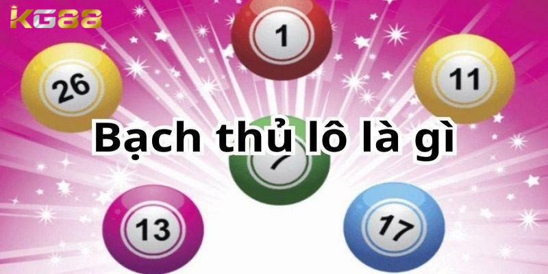
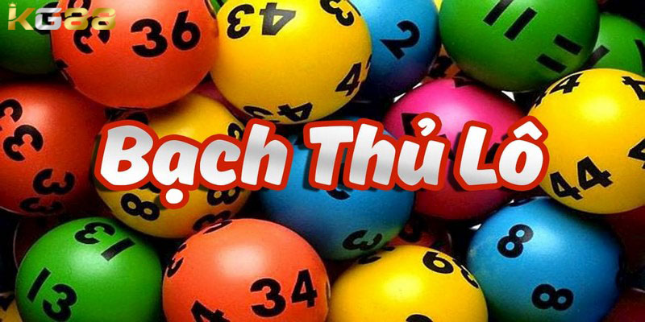
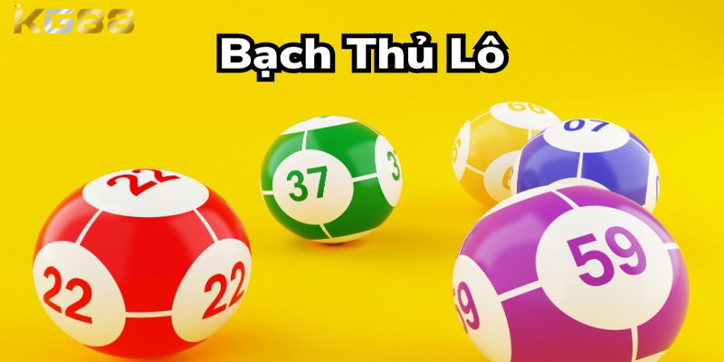

XỔ SỐ KG88
Bạch Thủ Lô Là Gì? Kinh Nghiệm Đánh Chuẩn Xác Nhất
POSTED ON THÁNG SÁU 17, 2024 BY ADMINKG88

Bạch thủ lô là gì đang nhận được nhiều sự quan tâm của anh em. Đây là phương pháp chơi được giới chuyên gia đánh giá mang lại cơ hội thắng lớn. Vậy phương pháp chơi bạch thủ lô này là gì, cùng KG88 tìm hiểu chi tiết qua bài viết dưới đây nhé.
Bạch thủ lô là gì?
Bạch thủ lô là gì, khái niệm này nói về việc chỉ chơi một con lô duy nhất. Có thể hiểu theo một cách dân dã là người tham gia chỉ cần chơi một ván duy nhất để phân định thắng thua và không cần đến ván thứ 2. Cách chơi này đòi hỏi lô thủ phải vận dụng tốt kỹ năng phán đoán để tìm ra một con lô chuẩn xác nhất và cá cược vào đó.
Ưu điểm của cách chơi này là anh em không cần phải đầu tư quá nhiều thời gian và tiền bạc nhưng vẫn có khả năng thu về nguồn lợi nhuận cực khủng. Khả năng trúng thưởng sẽ có phần cao hơn hơn so với việc chơi dàn lô hay song thủ lô, đây là hình thức dành cho những anh em yêu thích sự mạo hiểm và thử thách cũng chính là nhược điểm của bạch thủ lô.
Cũng không khác gì so với cách đánh bạch thủ đề, bạch thủ lô thích hợp cho những bet thủ cứng tay. Đặc biệt là những anh em có một tâm lý ổn định, vững vàng tuyệt đối.

Khái niệm bạch thủ lô là gì nói về việc chỉ chơi một con lô duy
nhất
Kinh nghiệm đánh bạch thủ lô là gì đúng chuẩn
Muốn chiến thắng thì không chỉ dựa vào mỗi yếu tố may rủi, anh em còn phải bỏ túi cho mình được những kinh nghiệm, phương pháp. Dưới đây là các bí kíp đánh bạch thủ lô là gì được nhiều chuyên gia xổ số KG88 chia sẻ và áp dụng thành công nếu muốn thắng lớn thì mọi người đừng ngần ngại học hỏi theo:
Bắt bạch thủ lô kép
Để bắt bạch thủ lô kép anh em sẽ dựa vào đầu- đuôi câm, khi mọi người xem bảng kết quả xổ số hãy ghi nhớ đến những con số này để nghiên cứu ra được bạch thủ của ngày hôm sau.
Ở Miền Bắc sẽ có tổng 27 giải tương ứng với các đầu số từ 0-9 nhưng không phải lần mở thưởng nào cũng về đầy đủ các đầu số này. Có những ngày sẽ không về một trong các đầu số đó, ví dụ mùng 5 tháng 5 đầu số 3 không về thì chắc chắn ngày sau sẽ xuất hiện 33. Các đầu số khá cũng tương tự như vậy.
Cách thức bắt bạch thủ lô là gì theo hình quả trám
Giống với cái tên gọi bắt bạch thủ lô hình quả trám, các con số sẽ được chọn để soi cầu khi xếp chúng liền nhau theo hình quả trám. Ví dụ như sau: 05256, 10425, 50621, từ đó kết quả cho ra bạch thủ lô 06 anh em nên đánh thêm bóng 60 để đảm bảo ăn chắc khi có lộn lại.
Thông thường khi đã soi cầu cẩn thận thì cơ hội bắt trúng bạch thủ lô bằng phương pháp này rất cao, vì tỷ lệ ba giải cùng nhau xuất hiện theo hình quả trám này không xuất hiện quá nhiều. Chỉ có những bet thủ giàu kinh tế, nhạy bén mới có thể nhận biết dấu hiệu này.

Cách thức bắt bạch thủ lô là gì theo hình quả trám
Bắt bạch thủ lô là gì qua giải trong bảng KQSX
Còn một phương pháp cũng mang lại hiệu quả khá cao nữa đó là bắt bạch thủ lô qua giải. Các giải nên lưu ý đó là giải 7, giải đặc biệt, những kết quả này thường mang đến những con số may mắn.
Ví dụ bắt bạch thủ lô qua giải 7 mà kết quả về 56808 thì hôm sau khả năng cao có bạch thủ lô là 80. Khi chưa tính được con số nào chuẩn thì anh em cũng nên cân nhắc lựa chọn chiến thuật này để mang lại chiến thắng.
Cách bắt bạch thủ lô là gì dựa vào đầu đuôi câm
Cách bắt bạch thủ này vừa dễ chơi lại có khả năng trúng thưởng cao. Bắt bạch thủ kép theo đầu lô câm thì người chơi cần phải theo dõi bảng kết quả xổ số và ghi lại các đầu lô câm ra trong ngày và đợi kết quả trong những ngày tiếp theo. Các con lô kép như 00, 22, 44, 55…sẽ nổ trong 2 ngày tiếp sau đó.
Nhưng nếu lô không ra trong 2 ngày đầu thì mọi người tiếp tục nuôi trong 4 ngày, lúc này số chắc chắn sẽ xuất hiện. Với kinh nghiệm cách bắt lô kép này từ ngày thứ 4 lô kéo sẽ ra và chiến thắng sẽ nằm trong tầm tay của anh em. Tương tự với cách bắt bạch thủ lô vào đuôi câm thì anh em cũng thực hiện các bước tương tự.
Bước đầu tiên mọi người theo dõi bảng kết quả xổ số và lựa chọn ra những kết quả đuôi lô nào câm. Tiếp theo chờ con kép của đầu câm có xuất hiện hay không là được, nếu như con kép đầu lô câm không ra và đầu kép cũng câm thì anh em hãy tiếp tục nuôi con bạch thủ đó trong bốn ngày tiếp theo

Cách bắt bạch thủ lô đầu đuôi câm vừa dễ chơi lại có khả năng
trúng thưởng cao
Bài viết trên là những thông tin chi tiết về bạch thủ lô là gì cùng kinh nghiệm chơi hiệu quả mà anh em không nên bỏ lỡ. KG88 hy vọng anh em sẽ nắm bắt được cách bắt bạch thủ lô hiệu quả và mang về nhiều chiến thắng lớn.
Xem thêm: Hướng Dẫn Cách Lên Dàn Đề 64 Số Hiệu Quả Thắng Lớn
BÀI VIẾT MỚI